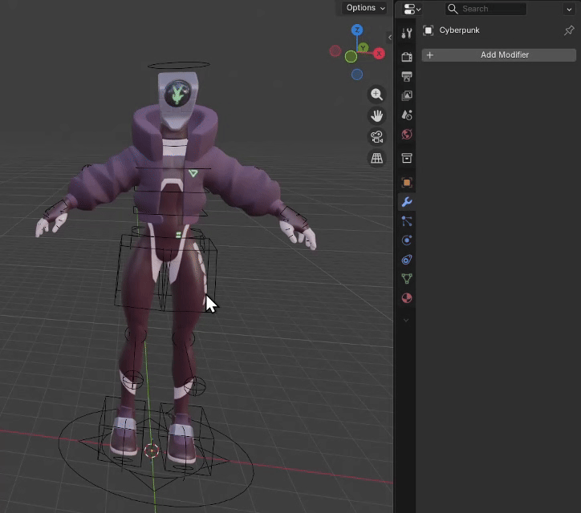
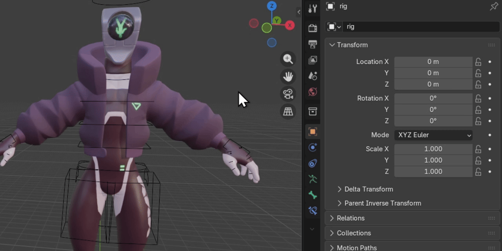
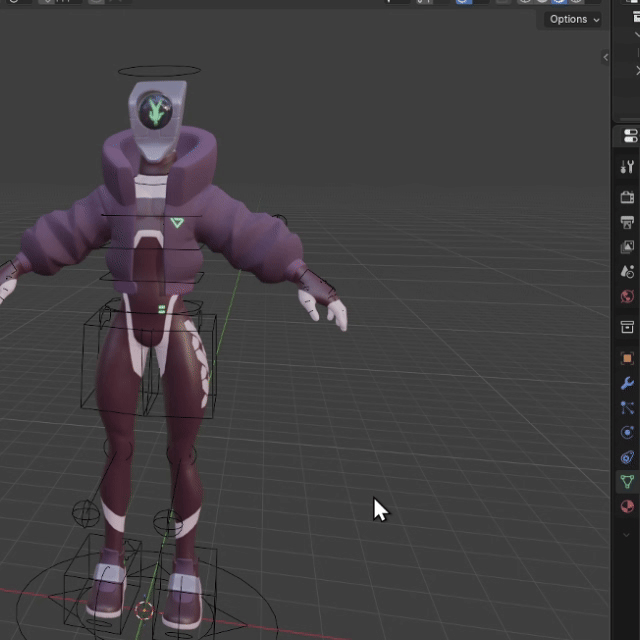

Quick Start¶
If this is your first time using Super Skin Pro, follow these steps to get started with the add-on.
1) Parent Mesh to Rig¶
Make sure your model is parented to an armature.
In Object Mode, select your model and then the armature, and press Ctrl + P to parent the model to the armature.
-
Choose With Empty Groups if you want to start skin weights from scratch.
-
Choose With Automatic Weights if you want to continue from automatic weights.

After parenting, an Armature modifier appears and vertex groups are created, which means you are ready for the next step: weight painting.

2) Open Super Skin Pro via the N-Panel¶
Press N in the viewport to show the N-Panel sidebar, then go to the "Super Skin Pro" tab.
Select your character mesh. You can switch between 4 modes:
1) Object Mode
2) Weight Paint Mode with Brush Painting
3) Weight Paint Mode with Vertex Selection
4) Pose Mode

3) Basic Bone Selection & Block Weight¶
This tutorial shows how to select bones in the viewport and how to use the Block Weight tool.
4) Paint Weights with Brush & Vertex Selection¶
Learn how to paint weights with the brush and with vertex selection.
5) Learn More¶
Now that you know the basics of the add-on, pick the tutorials that match your workflow.